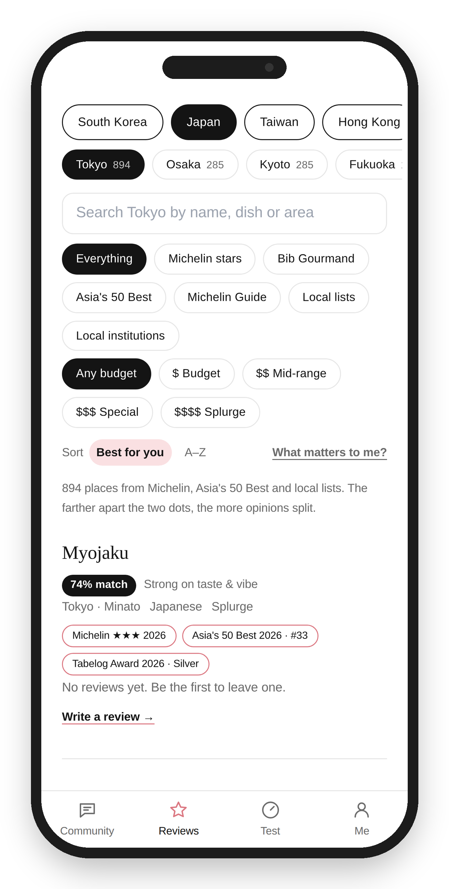
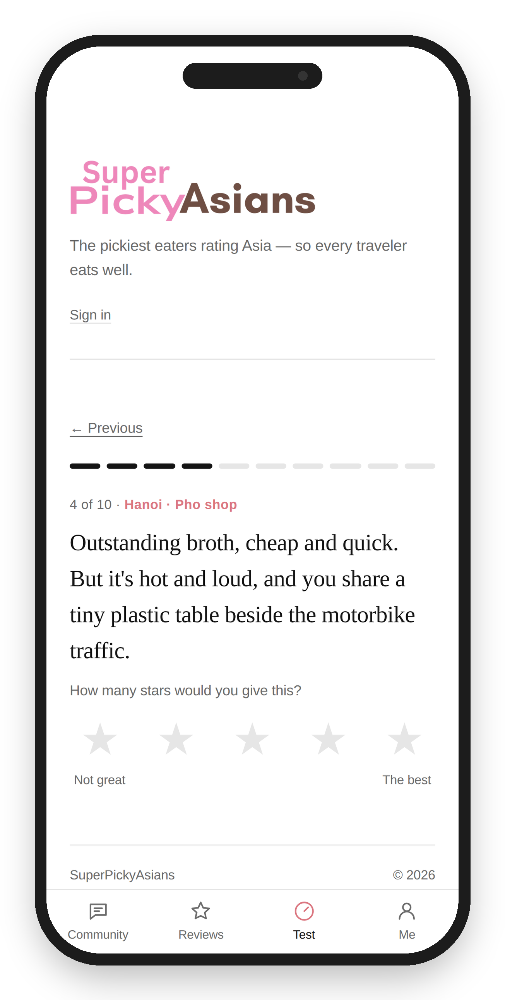
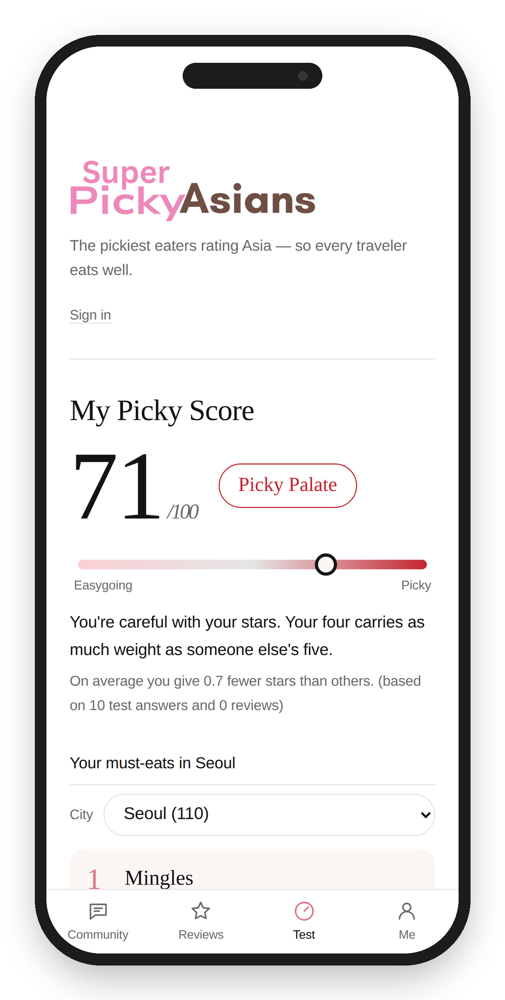
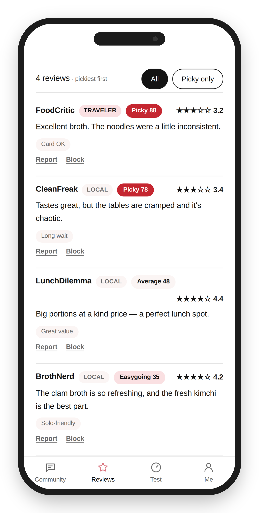
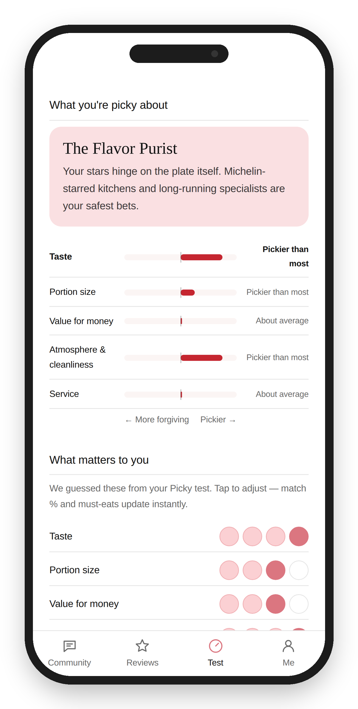
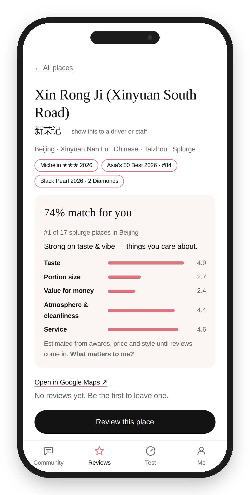
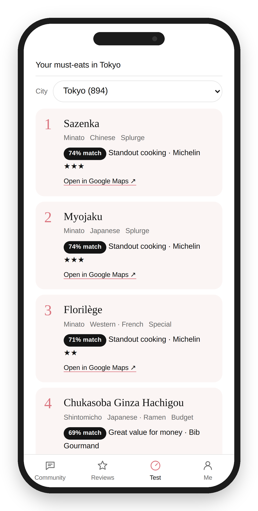
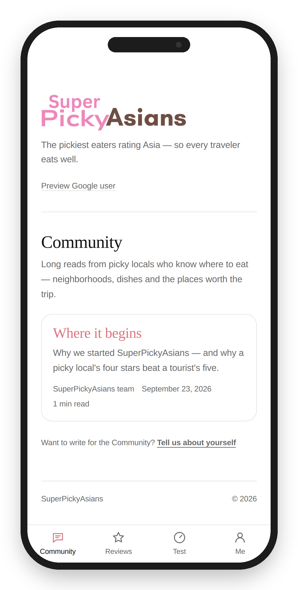

ASIA · 2026When you land somewhere new, the map is full of 4.6-star restaurants — and half of them are there because they're easy to find, not because they're good. Stars without context can't tell you who gave them.
SuperPickyAsians adds that context. Everyone who rates takes a short Picky test, so a generous traveler's five stars and a demanding local's four don't count the same. The result: a shortlist of places that the pickiest people still love — tuned to what you care about.
Travelers don't lack reviews. They lack reviews they can trust.
A 4.5 from someone who loves everything and a 4.5 from someone who's hard to impress look identical on every map app.
Busy, photogenic places near landmarks collect huge rating counts from one-time visitors — while the spots locals actually go back to get buried.
Some travelers want the best food at any price; others want big portions, great value, or a beautiful room. A single average can't serve all of them.
Rate ten meals from across Asia — a salty bowl of Tokyo ramen, an overpriced hotel dim sum, a noisy Hanoi pho shop. How you rate them tells us how you rate everything.
Two minutes from "how many stars would you give this?" to a score that follows every review you write.



Reviews are ordered by how hard the reviewer is to impress — not by how many stars they gave.
Two ratings side by side. When the crowd loves a place and picky locals don't, it gets an "Overhyped?" flag.
Each review says whether the author lives there or was traveling — so you know whose taste you're reading.
Before any reviews exist, scores are estimated from what's known about a place — awards, price level, signature dish, market stall or hotel dining room. As picky reviews come in, they take over.
What you're picky about becomes a match score on every restaurant — and a short list of must-eats in the city you're visiting.



Neighborhood guides, dish deep-dives and "worth the trip" stories — with cover photos, and every restaurant tagged so you can jump straight to it.
A small group of demanding locals who give the first ratings in each city. Their reviews carry a Founding badge.
Reviewers add up to three photos; readers like and discuss stories.
Everyone agrees to the community guidelines before posting. Any review, comment or story can be reported, and anyone can be blocked in one tap.

We start from places with an outside signal of quality — then let picky locals tell you which ones deserve it.
Latest MICHELIN Guide editions
Great food at a fair price — street food included
Entries in the 2026 top 100
1,500+ MICHELIN-selected restaurants, plus Tabelog Award, Black Pearl, Tatler Best and other well-known local lists — and 130+ long-running institutions, some more than a century old.
Every place shows its name in the local script — 新荣记, 銀座 八五, เจ๊ไฝ — ready to show a taxi driver or the staff.
Budget levels from $ to $$$$, local price where known, and a rough US-dollar figure.
English menu · Card OK · Cash only · Walk-in OK · Near transit · Solo-friendly.
Search a city by name, dish or neighborhood. Every place opens in Google Maps, with the crowd's rating shown next to the picky one.
Import the reviews you've already written on Google Maps, so your Picky Score starts on day one.
Live in Seoul, Tokyo, Bangkok — or anywhere on our map — and hard to impress? Rate the places you know well (it takes minutes), and your ratings become the first ones travelers see, with a Founding badge. Food writers: we'd love your stories in the Community too.